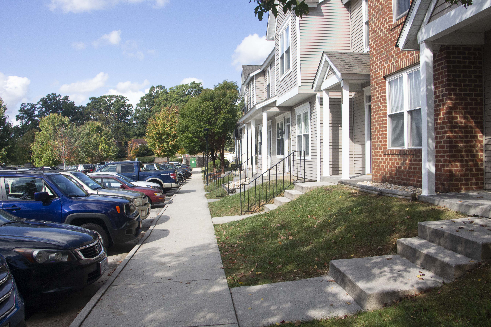

In graphic design, rhythmic movement has to do with repeating items strategically-- kind of like a backbeat.
White Space is Not You Enemy, by Golombisky and Hagen (2016). Focal Press.
Rhythm means that repeated objects create a visual flow that adds to the overall cohesiveness of the design.
Taken on an Iphone XS
The bricks act as a repeating pattern within the photo. The lines move the eye and allow the eye to see beyond the photo.
Taken on a DSLR Camera

The cars, townhouses, and railings are all repeating objects within the image, thus creating a pattern.